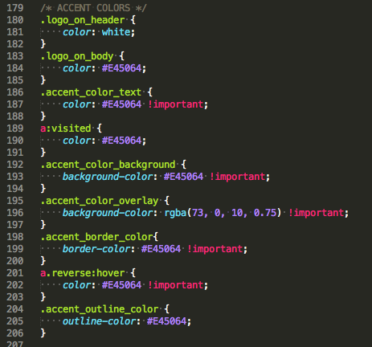
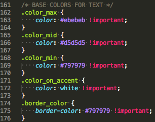
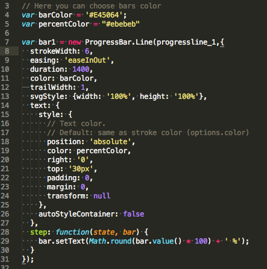

Burton Documentation
Getting Started
Thank you very much for purchasing our template. We have prepared an user-friendly documentation to help you quickly customize Burton. We hope that work with our theme won't bring you difficulties and it will be an easy task.
If you have any questions that aren’t covered in this documentation, please feel free to contact us at hello@redbrush.eu where we can provide more detailed support.
We've done our best in making Burton and hopefully you will love it as much as we do. Your opinion is very important for us and we will appreciate if you can rate and review Burton on ThemeForest.
Thanks so much!
Requirements
For installing this template you need to make sure that you have the following extensions on your webserver. You will need to contact your webhost if the following requirements are missing:
- PHP 5.2+;
- Apache webserver;
- PHP Mail support;
- Enabling JavaScript in the web browser.
To be able to edit and upload the theme you need also:
- A text editor like Sublime Text 2, Notepad++ or Brackets
- An FTP tool to upload the files like Filezilla or Cyberduck
Installation
Unzip the downloaded files to the local disk on your computer. Inside the extracted folder there will be a folder with documentation. Сopy all the content related to the layout that interests you to your server via FTP client. After that you need to choose theme(dark or light). Just choose .html file. If this is a white theme - rename this file from white.html to index.html. And finally you need just remove .css file. If you choose Dark theme - remove style.css, if Light - remove black.css
Note. In this archive the images that you can see in demo pages were replaced by a placeholder.
Structure
As Burton is an HTML template, it uses .html page in conjunction with css stylesheets and a number of javascript plugins. The following is a brief overview of the files and a look at some prominent features.
We do our best while making all files for Burton. Every file (HTML, CSS, JS) that was created by us has clear code, wrapped with comments - all this for your convenience.
Burton template have this file structure:
- css - CSS styles folder
- fonts - Fonts for your site
- img - folder for images
- js - JavaScript files folder
- php - PHP form handler for ajax
- index.html - main HTML file
- white.html - second HTML file(with light theme)
Html File Structure
This theme is built upon Twitter Bootstrap 3.3 framework and is fully responsive. It adapts to window resolution and looks good on all devices including ipad and iphone. See for yourself (resize your browser).
Grid System - Bootstrap includes a responsive, mobile first fluid grid system that appropriately scales up to 12 columns as the device or viewport size increases. The fluid grid system uses percents instead of pixels for column widths. Each row always include 12 columns (for example col-md-8 + col-md-4 = col-md-12). Bootstrap documentation: here.
A good example can be the following. We have a second row with 3 equal divs (.col-md-4) which expands in 12 columns for medium devices(less than 992px)
<div class="row">
<div class="col-md-8">.col-md-8</div>
<div class="col-md-4">.col-md-4</div>
</div>
<div class="row">
<div class="col-md-4">.col-md-4</div>
<div class="col-md-4">.col-md-4</div>
<div class="col-md-4">.col-md-4</div>
</div>
<div class="row">
<div class="col-md-6">.col-md-6</div>
<div class="col-md-6">.col-md-6</div>
</div>
Page Structure - The general structure is the same in all the html theme files. Here is the general structure:
<!doctype html>
<html>
<head>
<!-- Meta -->
<!-- Stylesheets -->
</head>
<body>
<!-- Header -->
<!-- Main section -->
<!-- Footer -->
<!-- Scripts -->
</body>
</html>
Css File Structure
We are using 10 CSS files across template. We separated styles for improving convenience to edit this template. If you're going to use this template in production we recommend you to merge all stylesheets in one file (for decreasing http queries).
Javascript File Structure
All javascripts are placed in folder /js. In custom.js file we implement all functions calls.
This theme uses following Javascript files:
- Bootstrap 3.3 framework
- jQuery 3.1.0 - A fast javascript library that simplifies how to traverse HTML documents, handle events, perform animations.
- Headroom.js - is a lightweight, high-performance JS widget (with no dependencies!) that allows you to react to the user's scroll. Documentaion here.
- Photoswipe.js - JavaScript image gallery for mobile and desktop. Documentaion here.
- skrollr.js - Stand-alone parallax scrolling JavaScript library for mobile (Android, iOS, etc.) and desktop in about 12k minified. Designer friendly. No JavaScript skills needed. Just plain CSS and HTML. Documentaion here.
- progressbar.js - progressbar generator. Documentaion here.
- progressbar_tools.js - custom script for generate 4 progressbars on index page. You can customize it for add/delete or change some settings for this progressbars. This file include comments.
- hover3d.js - is a simple hover script for creating 3d hover effect. Documentaion here.
- main.js - heart of this theme. In this file all function are initializes. And in this file you can see our functions with some comments, and customize it.
Elements
Icons Pack
Burton uses the FontAwesome Icons and SimleLineIcons Css pack. Using these icon packs is a simple matter of knowing the correct class to use.
Icons use the 'i' element and each have their own unique class which dictates which glyph is shown. For a full list of available classes, see the links provided above.
<i class="fa fa-user" aria-hidden="true"></i>
This code would result in the User icon.
Colour Schemes
Burton allows you to choose the colors of the text, borders, backgrounds, overlays and outlines
In style.css file you can find section "ACCENT COLOR", there you can find our default colors for this elements, and you can just change the colors of this classes to change the color throughout the site

Base color
In style.css you can find block "BASE COLORS FOR TEXT". You can change colors in this block for change base colors of text, links and borders.

Header Navigation
A tag with the class left_menu create a navigation menu for your site. You can simply change the existing items, change the name, or add new items to the menu.
<div class="menu">
<ul>
<li><a class="scrollto button_menu" href="#about_me">About Me</a></li>
<li><a class="scrollto button_menu" href="#resume">Resume</a></li>
<li><a class="scrollto button_menu" href="#my_projects">Projects</a></li>
<li><a class="scrollto button_menu" href="#latest_posts">Blog</a></li>
<li><a class="scrollto button_menu" href="#contacts">Contact</a></li>
</ul>
</div>
Preloader
Before the main contents of the website are loaded, there is an opportunity to show the preloader of the site. If you don’t need the preloader, just delete the following div in your index.html:
<div id="page-preloader">
<div class="wrapper">
<div class="loader">
<div class="circle circle_four"></div>
<div class="circle circle_three"></div>
<div class="circle circle_two"></div>
<div class="circle circle_one"></div>
</div>
</div>
</div>
You can change preloader colors and width in style.css. Just find "PRELOADER STYLES" and "CIRCLE PRELOADER STYLES" blocks, and change the settings what you need.
Animation Effects
Burton uses Animate.css to trigger animations on page. You will find all the animations in Animate.css website. And here you can find documentation :
<div class="nameClass nameAnimation">Content here<div>
<!-- Example: -->
<div class="col-sm-4 fadeIn">Content here<div>
For the animation duration and time function you can change css settings for this classes, and add this classes for elements you need.
Progressbars settings
We have 4 default progressbars in index.html, you can create your own progressbars, or change the existing. In /js folder you can find progressbar_tools.js. Just change the options in accordance with this documentation

Photoswipe 3d gallery
In our template you can create gallery with Photoswipe.js. You can find in index.html "My project" block, and replace the placeholder with your image, and change title and description.
In the bottom of index.html, you can find "Photoswipe" block. Do not delete this block. You can change this block in accordance with documentation.